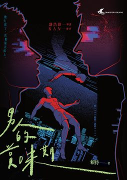

【三刷出版】新增作者後記 ★賴特小說三部曲的首部曲，2026年入選文策院（TAICCA）IP Meetup暢銷書IP改編交流推薦。 盛浩偉．專文推薦 ——「集子裡的各篇在『將一切性化』與『全然去性化』之間找到了絕佳的平衡，並以此呈現出當代男同志最典型的生活與情感樣貌。」 【關於這本書：都市霓虹下的情感懸疑地圖】 在高樓與霓虹交織的台北夜色中，你是否也曾感到窒息？這不只是一本小說，更是一面鏡子。映照出那些藏在交友軟體滑動聲、捷運末班車、空蕩租屋處裡的——祕密與孤獨。 全書收錄五篇都市懸疑短篇，作者將「同志視角」注入懸疑故事。在推理破案的緊湊節奏裡，你看見的將不再只是案件，而是現代人最赤裸的愛與恐懼。 二部曲《恆溫飼養》於2026年9月出版，書中的〈第23個吻〉和〈幸福快樂的日子〉，是作者為本書〈第22個吻〉和〈有效期〉寫的續篇。 ◤本書看點◢ 〈第22個吻〉｜「工作就是工作。」 奕晨在按摩工作室上班，習慣把還不錯的客人轉成私約。客人承逸第九次來，提出了一個「二十一天」的遊戲，因為，心理學說二十一天就能養成一種習慣。接下來，承逸常在下午傳來餐廳地址，帶奕晨去101挑香水，買下專櫃價七萬多的包。某天晚上在酒吧，承逸喝著酒，說以前也有人跟他玩過二十一天…… 〈有效期〉｜前一晚的好感覺，隔天就沒有下文。 阿澔二十九歲，延畢多年的碩士班終於畢業，在交友軟體上認識了D，一夜過來傳來「下次再約。」隔了一天卻只剩下「嗯嗯」兩個字。之後，在他家借住幾天的明澤、出版社的新同事小吳，也都發生了一樣的事。阿澔決定了他的反向測試計畫，看一個晚上過去，別人還記得什麼。 〈戒斷〉｜睡前倒扣的杯子，早上裝滿了水。 夜市巷子的三樓，一層公寓被房東隔成四間小套房，木隔板很薄，隔壁說話每個字都聽得見。他戒了咖啡，晚上輪流刷洗著二手的電風扇和電鍋。睡前，他記得把水杯擦乾，倒扣在桌角。早上醒來，杯子立在桌上，裝滿了水，摸起來比悶熱的早晨還冰。 〈失蹤者〉｜在系統裡，同住的伴侶只算「依附者」。 2045年，家戶統一碼正式實施，每一戶每天深夜都要通過系統驗證。林書禾交往三年的伴侶張子宥沒有回家，他走進身分稽核署報案，查驗員告訴他：「先生，同住友人就是依附者。」他晚了三十六小時以上才報案，前一天還去辦了同住轉配偶的申請；隔天下午，林書禾成了被約談的人。 〈男人走失了〉｜那張吊牌上的臉，被縫成了沒有。 小時候，他有一張五乘九公分的淺色麻布吊牌，後來在趕補習的公車上掉了。失物招領處的人要他描述特徵，他在表格上畫了一塊黑色的小矩形，對方要他在旁邊寫上「無臉」兩個字。成年以後，他到了陌生的縱谷，在宿舍喜歡上來自台北的室友N；也有一段日子，他每天清晨騎機車，載一個男孩去速食店上班，男孩在他背後睡著，晨光裡看不清臉。 【編輯誠懇推薦：為什麼你該現在入手？】 這是一部既驚險刺激、又深情感性的作品。無論你是推理迷，還是曾在都市叢林中感到孤單的靈魂，都能在書中找到屬於你的那個角落。 三刷新增作者後記，故事，還沒有結束。